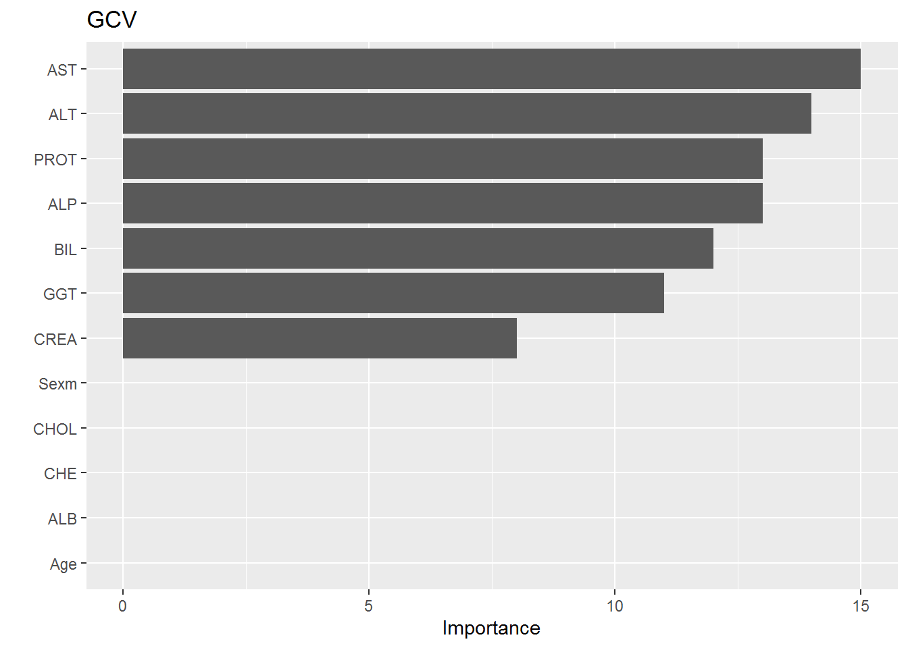

6 5-FOLDS FOR MULTIVARIATE ADAPTIVE REGRESSION SPLINES
See Github for code JohnAtMill
Average.AUC.mars<-print(paste("Average of AUC is", mean(err_vec1)))## [1] "Average of AUC is 0.932625188403815"Average.Misclas.mars<-print(paste("Average of Missclassification is ", mean(missclass.rate)))## [1] "Average of Missclassification is 0.0417628911488818"summary(fit.mars)## Call: earth(formula=factor(Category)~., data=train.v,
## glm=list(family=binomial(link="logit")), degree=3)
##
## GLM coefficients
## 1
## (Intercept) 6.6029615
## h(16.9-ALT) 0.5295046
## h(80-AST) -0.1431084
## h(CREA-64) 0.0049164
## h(146.3-GGT) -0.0399998
## h(65.3-ALP) * h(ALT-16.9) 0.0107686
## h(ALP-65.3) * h(ALT-16.9) 0.0016820
## h(ALT-16.9) * h(14-BIL) -0.0215858
## h(ALT-16.9) * h(PROT-78.5) 0.0234928
## h(ALT-16.9) * h(78.5-PROT) -0.0140240
## h(46.9-AST) * h(146.3-GGT) -0.0000683
## h(65.3-ALP) * h(ALT-16.9) * h(CREA-63) -0.0002287
## h(65.3-ALP) * h(ALT-16.9) * h(63-CREA) -0.0013877
## h(43.7-ALP) * h(80-AST) * h(PROT-70.4) 0.0027456
## h(15.8-ALT) * h(46.9-AST) * h(146.3-GGT) -0.0003098
## h(ALT-15.8) * h(46.9-AST) * h(146.3-GGT) 0.0000040
##
## GLM (family binomial, link logit):
## nulldev df dev df devratio AIC iters converged
## 341.02 476 26.4952 461 0.922 58.5 10 1
##
## Earth selected 16 of 25 terms, and 7 of 12 predictors
## Termination condition: Reached nk 25
## Importance: AST, ALT, ALP, PROT, BIL, GGT, CREA, Age-unused, Sexm-unused, ...
## Number of terms at each degree of interaction: 1 4 6 5
## Earth GCV 0.01641433 RSS 6.616739 GRSq 0.8397633 RSq 0.8640162vip(fit.mars, num_features = 24) + ggtitle("GCV")
From the variable importance plot we can see that,AST,ALT,PROT in descending order are important variables by MARS.